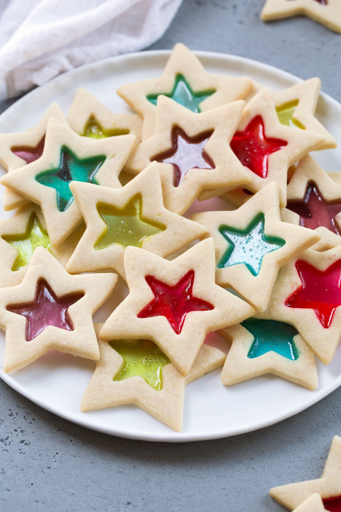

Stained Glass Cookies
Stained Glass Cookies are sure to impress people of all ages! These crisp buttery cookies are cut into festive shapes and filled with hard candies, then they're baked and the candy melts into an even layer for a beautiful stained glass effect. A delicious cookie to add to the cookie tray this year!
Ingredients
- Jolly Ranchers hard candies (approx. 20)
- 1 cup (226g) unsalted butter, softened
- 1 cup (200g) granulated sugar
- 1/4 tsp salt
- 2 large eggs
- 1 tsp vanilla extract
- 3 cups (382g) all-purpose flour (spooned and leveled), plus more for dusting
Intructions
- Unwrap and separate Jolly Ranchers into each color then place in separate small resealable bags. Crush into small bits (not powder) using a meat mallet, set aside.
- In the bowl of an electric stand mixer cream together butter, sugar and salt until well combined.
- Mix in eggs one at a time then blend in vanilla.
- With mixer set on low speed slowly add in flour and mix until well combined.
- Scrape dough out and shape into a rectangle, wrap in plastic wrap and and chill 1 hour.
- Cut chilled dough into thirds. Leave one portion out to work with and chill remaining.
- Roll dough out onto a floured surface (about 1/5-inch thick). Cut out as many large stars as possible using a star shape cookie cutter (approx. 3.5-inch stars).
- Transfer cut stars to baking sheet lined with a silicone baking mat*. Cut a smaller star (using a 1.75-inch star cutter) from the center of each and remove**. Re-roll and cut scrap dough.
- Fill cut out centers about 3/4 of the way with crushed jolly ranchers. Chill cookies in refrigerator until firm, about 15 - 20 minutes. Meanwhile preheat oven to 350 degrees.
- Bake cookies until set and candy center has melted, about 12 - 14 minutes.
- Let cool on baking sheet until Jolly Ranchers have set and hardened. Repeat process with remaining refrigerated dough. Store in an airtight container.
Notes
- *Someone has mentioned that their cookies stuck to parchment paper (which was previously also listed as an option) so I'd recommend sticking with silicone baking mats. I've never had issues with parchment paper but brands may vary so for best results just use silicone baking mats.
- **You can use a toothpick if needed to help remove the center piece.
- **If you'd like to be able to hang them with a ribbon then cut a small hole using a standard size plastic straw near the top before chilling and baking.
To view the original recipe, visit cookingclassy.com